Informazioni Importanti
Questo manuale deve essere considerato parte integrante della lavatrice e deve essere allegato all'apparecchio nel caso venga rivenduto.
© Rex — Eletrolux Group. Tutti i diritti riservati.
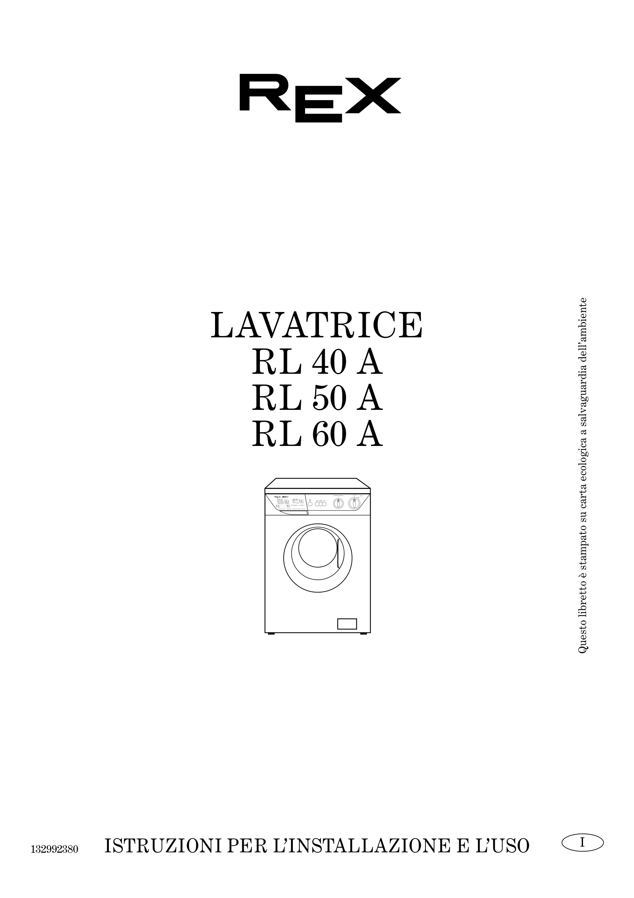
Indice
Guida alla lettura del manuale
- Avvertenze — pag. 3
- Smaltimento e protezione ambiente — pag. 4
- Caratteristiche tecniche — pag. 4
- Installazione — pag. 5-6
- Descrizione della macchina — pag. 7
- Uso e pannello comandi — pag. 8-10
- Consigli per il lavaggio — pag. 11-12
- Tabella programmi — pag. 13-14
- Simboli trattamento tessuti — pag. 15
- Manutenzione — pag. 16-17
- Anomalie di funzionamento — pag. 18-19
- Assistenza e ricambi — pag. 19
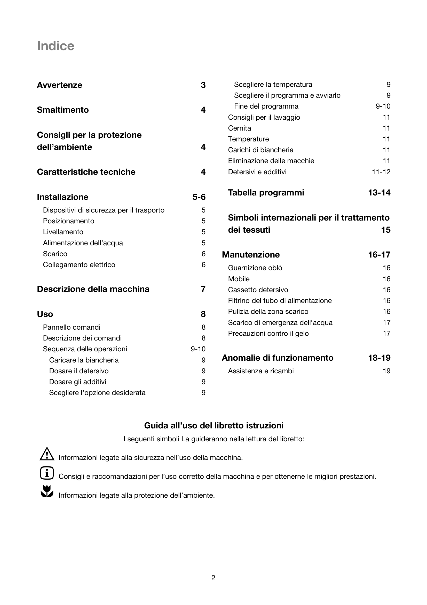
Avvertenze di Sicurezza
Leggere attentamente questo libretto d'istruzioni e prestare particolare attenzione alle norme di sicurezza. Conservare questo libretto per future consultazioni e cederlo al nuovo proprietario in caso di cessione della macchina.
Installazione
- Controllare all'atto del disimballo che la macchina non sia danneggiata. In caso di dubbio, non metterla in funzione e rivolgersi all'assistenza tecnica.
- Questa macchina è pesante, fare attenzione nel maneggiarla.
- Non è permesso, per motivi di sicurezza, apportare modifiche all'apparecchiatura.
- Si deve togliere l'imballo interno della macchina prima di utilizzarla. I dispositivi di protezione per il trasporto devono essere rimossi completamente.
- Qualsiasi intervento idraulico deve essere effettuato solo da un idraulico qualificato.
- Controllare che l'impianto domestico sia in grado di sopportare il carico massimo (2,25 kW).
- Dopo l'installazione verificare che la macchina non sia appoggiata sul cavo di alimentazione.
Uso
- Questa macchina è progettata per uso domestico da persone adulte.
- Non avviare mai la macchina se il cavo di alimentazione è danneggiato o se il cruscotto/piano di lavoro presentano danni.
- Non estrarre mai la spina tirando il cavo.
- Non mettere in macchina capi smacchiati con benzina, alcool, trielina, ecc. — attendere che il prodotto sia evaporato.
- Dopo aver caricato la biancheria, assicurarsi che nessun capo rimanga incastrato tra oblò e guarnizione.
- Non cercare di riparare la macchina da soli — rivolgersi a un centro di assistenza autorizzato.
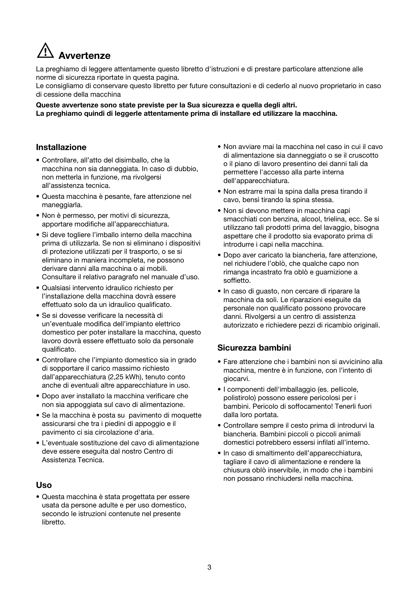
Sicurezza bambini
- Fare attenzione che i bambini non si avvicinino alla macchina mentre è in funzione.
- I componenti dell'imballaggio (pellicole, polistirolo) possono essere pericolosi per i bambini — pericolo di soffocamento.
- Controllare sempre il cesto prima di introdurvi la biancheria.
- In caso di smaltimento, tagliare il cavo di alimentazione e rendere la chiusura oblò inservibile.
Smaltimento e Protezione Ambiente
Materiali di imballaggio
I materiali recanti il simbolo di riciclabilità devono essere deposti negli appositi contenitori:
Macchina
Per un corretto smaltimento della vecchia macchina, utilizzare le discariche autorizzate.

Consigli per il risparmio
- Utilizzare il cesto a pieno carico per un lavaggio più economico e meno nocivo per l'ambiente.
- Utilizzare il prelavaggio solamente per biancheria molto sporca.
- Adattare la dose di detersivo alla durezza dell'acqua, alla quantità di biancheria e al grado di sporco.
- Con un adeguato pretrattamento si possono eliminare le macchie resistenti e lavare a temperatura più bassa.
Installazione
Rimozione dispositivi di sicurezza per il trasporto
Prima di mettere in funzione la macchina, togliere tutti i dispositivi di sicurezza previsti per il trasporto. Conservare tutti i pezzi per un eventuale futuro spostamento.

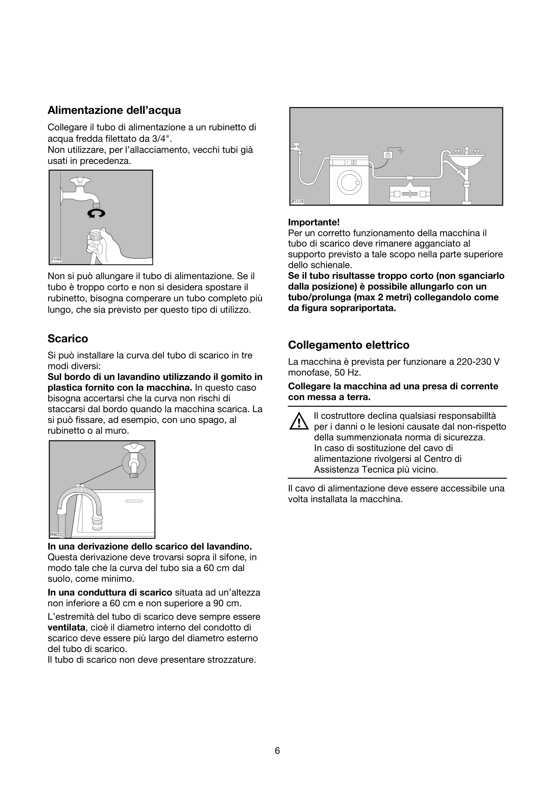
Posizionamento e livellamento
Prima di installare la macchina nella posizione definitiva, ruotare l'estremità del tubo di carico sul retro nella direzione più vicina al rubinetto. Svitare leggermente la ghiera di fissaggio, girare l'estremità del tubo e riavvitare.
- Installare su un pavimento piatto e duro.
- Assicurarsi che la circolazione dell'aria attorno alla macchina non sia impedita da tappeti o moquette.
- Mantenere una distanza di almeno 3-5 cm dai mobili e dal muro.
- Livellare accuratamente la macchina svitando o avvitando i piedini regolabili.
- Non mettere sotto la macchina cartone, legno o materiali simili per compensare disuguaglianze del pavimento.
Alimentazione dell'acqua
- Collegare il tubo di alimentazione a un rubinetto di acqua fredda filettato da 3/4".
- Non utilizzare vecchi tubi già usati in precedenza.
- Non allungare il tubo di alimentazione — se troppo corto, acquistare un tubo completo più lungo.
Scarico
Il tubo di scarico può essere installato in tre modi diversi:
- Sul bordo di un lavandino — utilizzare il gomito in plastica fornito. Fissare con spago al rubinetto o al muro.
- In una derivazione dello scarico del lavandino — sopra il sifone, a minimo 60 cm dal suolo.
- In una conduttura di scarico — ad altezza non inferiore a 60 cm e non superiore a 90 cm.
Collegamento elettrico
Descrizione della Macchina
Questa macchina è dotata del dispositivo ECO AVANT che consente l'utilizzo totale del detersivo da parte della macchina e riduce il consumo di acqua e di energia elettrica.
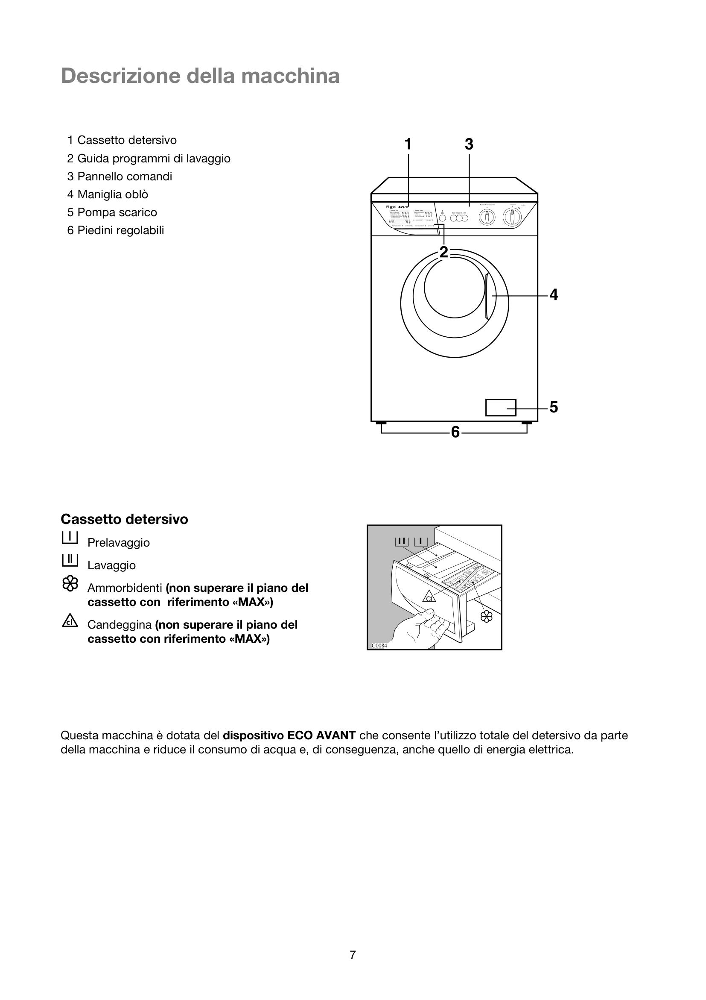
Componenti principali
Cassetto detersivo
Pannello Comandi
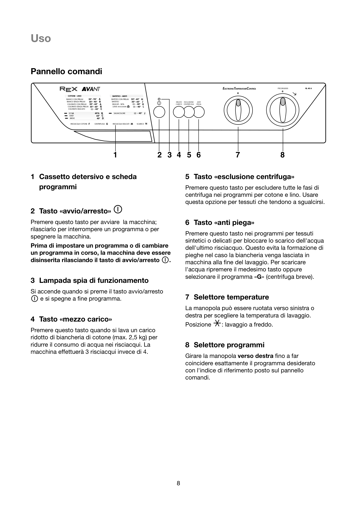
Descrizione dei comandi
Sequenza delle operazioni
1. Caricare la biancheria
Aprire l'oblò, introdurre la biancheria nel cesto un capo alla volta. Distendere la biancheria il più possibile. Chiudere l'oblò.
2. Dosare il detersivo
Estrarre il cassetto fino all'arresto. Versare il detersivo nella vaschetta II (lavaggio). Per prelavaggio, versare anche nella vaschetta I.
3. Dosare gli additivi
Versare l'ammorbidente nello scomparto ♢ e la candeggina nello scomparto ♻ (non superare il piano MAX). Chiudere il cassetto delicatamente.
4. Scegliere l'opzione desiderata
Premere il tasto desiderato in base alle esigenze di lavaggio e al tipo di biancheria.
5. Scegliere la temperatura
Ruotare la manopola temperature sui gradi desiderati.
6. Scegliere il programma e avviarlo
Ruotare la manopola programmi verso destra sul programma prescelto e premere il tasto avvio/arresto ▷ — la spia di funzionamento si accende e la macchina inizia a funzionare.

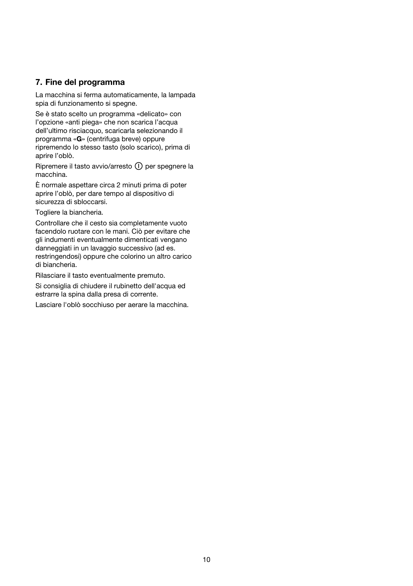
7. Fine del programma
La macchina si ferma automaticamente e la spia di funzionamento si spegne.
- Se è stato scelto un programma con opzione anti piega, scaricare l'acqua selezionando il programma G (centrifuga breve) o ripremendo lo stesso tasto.
- Ripremere il tasto avvio/arresto per spegnere la macchina.
- Attendere circa 2 minuti prima di aprire l'oblò (tempo di sblocco del dispositivo di sicurezza).
- Togliere la biancheria e controllare che il cesto sia completamente vuoto.
- Si consiglia di chiudere il rubinetto dell'acqua, estrarre la spina e lasciare l'oblò socchiuso per aerare la macchina.
Consigli per il Lavaggio
Cernita
- Attenersi ai simboli per il trattamento dei tessuti sulle etichette dei capi.
- Suddividere la biancheria: bianchi, colorati, sintetici, delicati, lana.
- Capi bianchi e colorati non devono essere lavati assieme.
- La biancheria colorata nuova può stingere al primo lavaggio — lavarla a parte la prima volta.
- Accertarsi che non rimangano oggetti di metallo (fermagli, spille, spilli).
- Abbottonare le federe, chiudere cerniere, ganci e asole.
- Raggruppare i capi piccoli (calzini, cinture) in una borsa di tela o federa.
- Trattare le tende con cura — togliere i ganci o legarli in una retina.
Temperature
Il programma ciclo lana è stato approvato da Woolmark per il lavaggio dei capi in lana etichettati "lavabile in lavatrice" (Licenza Nr. M9603).
Carichi di biancheria
Pesi indicativi della biancheria asciutta
| Capo | Peso |
|---|---|
| Accappatoio | 1200 g |
| Copri piumino | 700 g |
| Lenzuola | 500 g |
| Camice da lavoro uomo | 600 g |
| Pigiami da uomo | 500 g |
| Tovaglie | 250 g |
| Federe | 200 g |
| Asciugamani in spugna | 200 g |
| Camicie da notte | 200 g |
| Camicie da uomo | 200 g |
| Tovaglioli | 100 g |
| Strofinacci | 100 g |
| Slip da donna/uomo | 100 g |
| Camicette | 100 g |
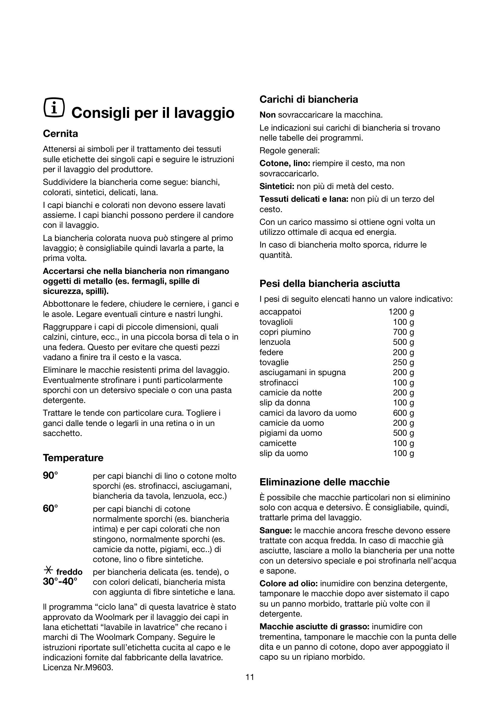
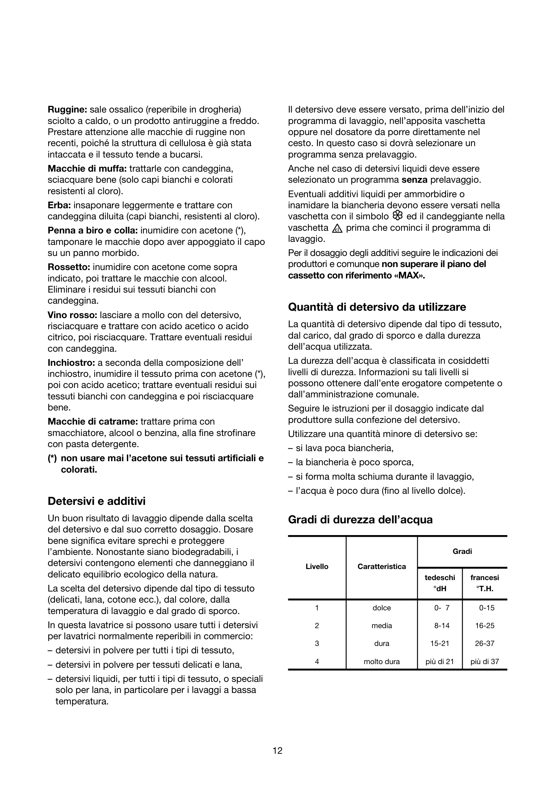
Eliminazione delle macchie
| Macchia | Trattamento |
|---|---|
| Sangue | Acqua fredda se fresco; ammollo notturno con detersivo speciale se asciutto |
| Colore ad olio | Benzina detergente, tamponare, trattare più volte |
| Grasso asciutto | Trementina, tamponare con panno di cotone |
| Ruggine | Sale ossalico sciolto a caldo o antiruggine a freddo |
| Muffa | Candeggina, sciacquare bene (solo capi bianchi resistenti al cloro) |
| Erba | Insaponare, candeggina diluita (capi bianchi) |
| Penna biro / Colla | Acetone (*), tamponare |
| Rossetto | Acetone, poi alcool; candeggina su bianchi |
| Vino rosso | Ammollo con detersivo, acido acetico/citrico, poi candeggina |
| Inchiostro | Acetone (*), poi acido acetico; candeggina su bianchi |
| Catrame | Smacchiatore, alcool o benzina; pasta detergente |
Detersivi e additivi
Un buon risultato di lavaggio dipende dalla scelta del detersivo e dal suo corretto dosaggio. In questa lavatrice si possono usare tutti i detersivi per lavatrici normalmente in commercio:
- Detersivi in polvere per tutti i tipi di tessuto
- Detersivi in polvere per tessuti delicati e lana
- Detersivi liquidi per tutti i tipi di tessuto o speciali per lana
Il detersivo deve essere versato prima dell'inizio del programma nell'apposita vaschetta o nel dosatore da porre direttamente nel cesto. In caso di detersivo liquido, selezionare un programma senza prelavaggio.
Durezza dell'acqua
| Livello | Caratteristica | Gradi tedeschi °dH | Gradi francesi °T.H. |
|---|---|---|---|
| 1 | Dolce | 0-7 | 0-15 |
| 2 | Media | 8-14 | 16-25 |
| 3 | Resistente | 15-21 | 26-37 |
| 4 | Molto dura | > 21 | > 37 |
Utilizzare una quantità minore di detersivo se: si lava poca biancheria, la biancheria è poco sporca, si forma molta schiuma, l'acqua è poco dura.
Tabella Programmi
Programmi energici — Cotone e lino
Carico massimo: 5 kg
| Progr. | Tipo di biancheria | Temp. | Descrizione del ciclo | Opzioni |
|---|---|---|---|---|
| A | Bianchi con prelavaggio — molto sporchi | 30-90°C | Prelavaggio + lavaggio + 4 risciacqui + centrifuga lunga | Escl. centrifuga, Mezzo carico |
| B | Bianchi senza prelavaggio — normalmente sporchi | 30-90°C | Lavaggio + 4 risciacqui + centrifuga lunga | Escl. centrifuga, Mezzo carico |
| A | Colorati con prelavaggio — molto sporchi | 30-60°C | Prelavaggio + lavaggio + 4 risciacqui + centrifuga lunga | Escl. centrifuga, Mezzo carico |
| B | Colorati senza prelavaggio — normalmente sporchi | 30-60°C | Lavaggio + 4 risciacqui + centrifuga lunga | Escl. centrifuga, Mezzo carico |
| ECO | Programma economia — bianchi e colorati leggermente sporchi | 60°A | Lavaggio 60°C + 4 risciacqui + centrifuga lunga | Escl. centrifuga, Mezzo carico |
| C | Colorati delicati senza prelavaggio — poco sporchi | -40°C | Lavaggio + 4 risciacqui + centrifuga lunga | Escl. centrifuga, Mezzo carico |
| C | Bianchi leggermente sporchi | 60°C | Lavaggio + 4 risciacqui + centrifuga lunga | Escl. centrifuga, Mezzo carico |
| Daily | Ciclo breve — biancheria poco sporca | 40°C | Lavaggio + 4 risciacqui + centrifuga lunga | Escl. centrifuga, Mezzo carico |
| F | Risciacqui cotone — capi lavati a mano | — | 4 risciacqui con additivi + centrifuga lunga | Escl. centrifuga, Mezzo carico |
| G | Centrifuga — capi da centrifugare | — | Scarico acqua + centrifuga breve | — |
Il programma B con selettore temperature posizionato su 60A è il programma di riferimento per i dati contenuti nell'etichetta energia (CEE 92/75).
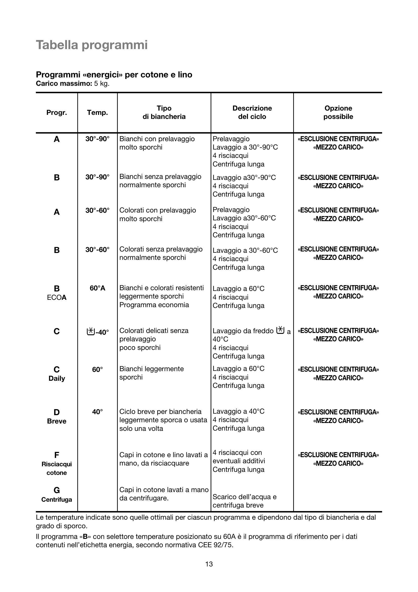
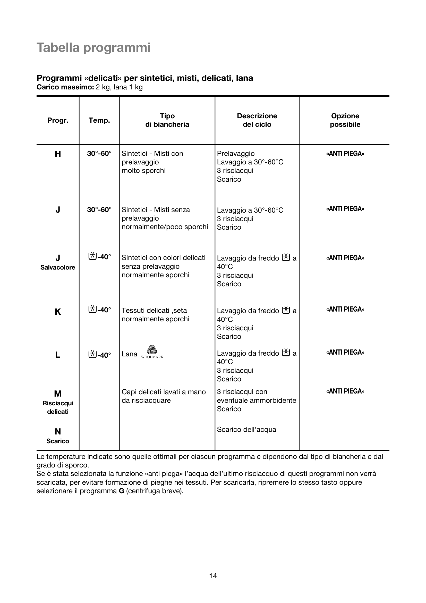
Programmi delicati — Sintetici, misti, lana
Carico massimo: 2 kg (lana 1 kg)
| Progr. | Tipo di biancheria | Temp. | Descrizione del ciclo | Opzioni |
|---|---|---|---|---|
| H | Sintetici/Misti con prelavaggio — molto sporchi | 30-60°C | Prelavaggio + lavaggio + 3 risciacqui + scarico | Anti piega |
| J | Sintetici/Misti senza prelavaggio — normalmente/poco sporchi | 30-60°C | Lavaggio + 3 risciacqui + scarico | Anti piega |
| Salvacolore | Sintetici colori delicati senza prelavaggio — normalmente sporchi | -40°C | Lavaggio + 3 risciacqui + scarico | Anti piega |
| K | Tessuti delicati, seta — normalmente sporchi | -40°C | Lavaggio + 3 risciacqui + scarico | Anti piega |
| L | Lana | -40°C | Lavaggio + 3 risciacqui + scarico | Anti piega |
| M | Risciacqui delicati — capi lavati a mano | — | 3 risciacqui con ammorbidente + scarico | Anti piega |
| N | Scarico | — | Scarico dell'acqua | — |
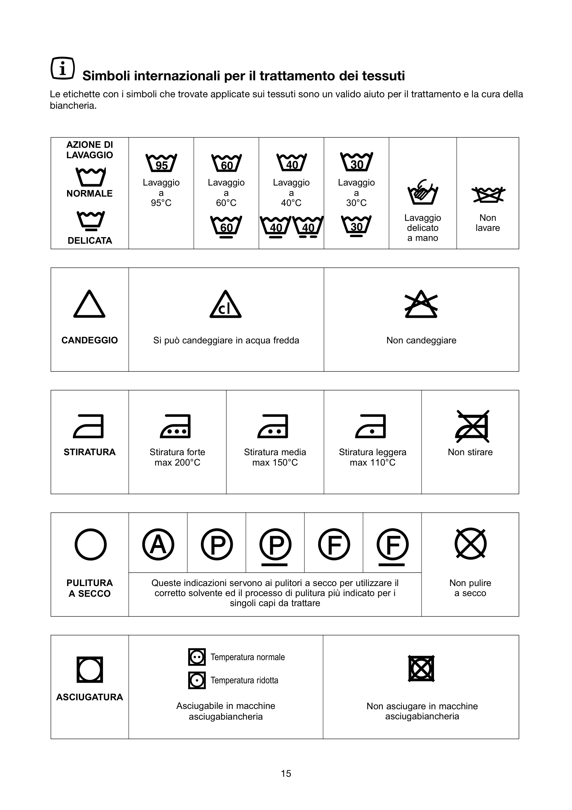
Simboli internazionali per il trattamento dei tessuti
| Simbolo | Significato |
|---|---|
| 95°C ● | Lavaggio a 95°C — azione normale |
| 60°C ● | Lavaggio a 60°C — azione normale |
| 40°C ● | Lavaggio a 40°C — azione normale |
| 30°C ● | Lavaggio a 30°C — azione normale |
| 30°C ● | Lavaggio delicato |
| ✍ | Lavaggio a mano |
| ✗ | Non lavare |
| △ | Si può candeggiare in acqua fredda |
| △ ✗ | Non candeggiare |
| ●●● 200°C | Stiratura forte (max 200°C) |
| ●● 150°C | Stiratura media (max 150°C) |
| ● 110°C | Stiratura leggera (max 110°C) |
| ✗ | Non stirare |
| ◯ | Asciugabile in asciugabiancheria — temperatura normale |
| ◯ ● | Asciugabile in asciugabiancheria — temperatura ridotta |
| ◯ ✗ | Non asciugare in asciugabiancheria |
| ◯ P / F | Pulitura a secco — indicazioni per solvente/processo |
| ◯ ✗ | Non pulire a secco |
Manutenzione
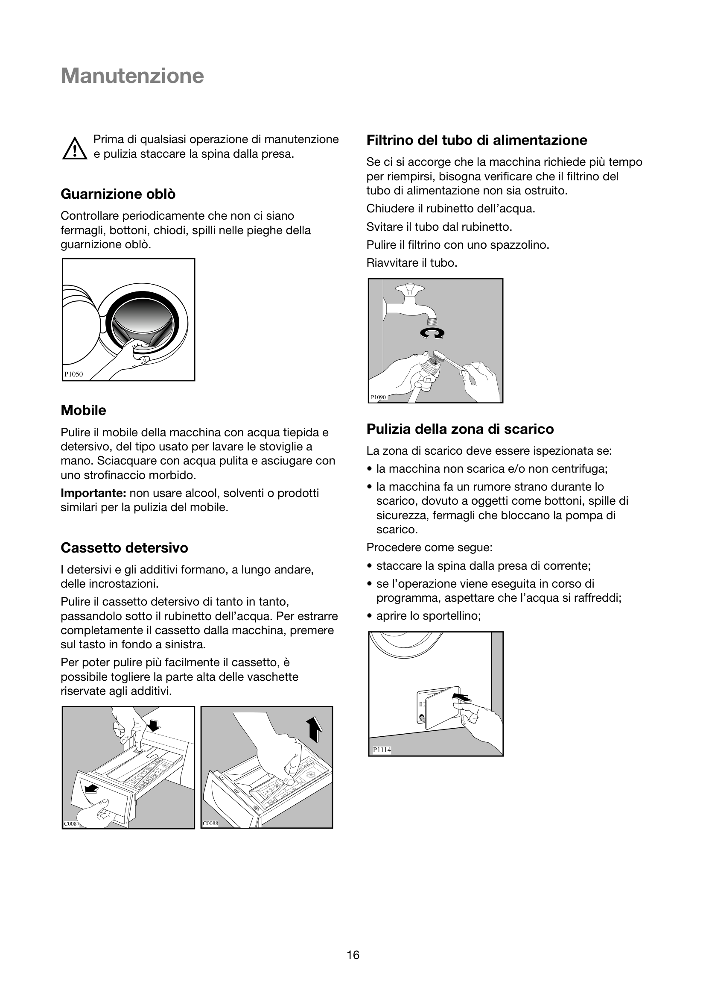
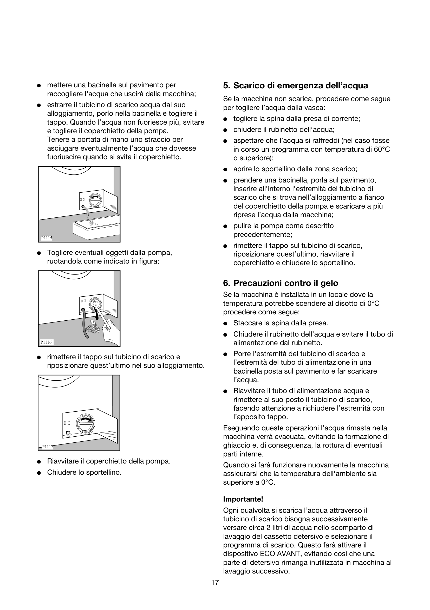
Guarnizione oblò
Controllare periodicamente che non ci siano fermagli, bottoni, chiodi o spilli nelle pieghe della guarnizione oblò.
Mobile
Pulire il mobile con acqua tiepida e detersivo per stoviglie. Sciacquare con acqua pulita e asciugare con uno strofinaccio morbido.
Cassetto detersivo
I detersivi e gli additivi formano incrostazioni a lungo andare. Pulire il cassetto di tanto in tanto passandolo sotto il rubinetto. Per estrarre completamente il cassetto, premere sul tasto in fondo a sinistra. Per pulire più facilmente, è possibile togliere la parte alta delle vaschette riservate agli additivi.
Filtrino del tubo di alimentazione
Se la macchina richiede più tempo per riempirsi, verificare che il filtrino del tubo di alimentazione non sia ostruito:
Pulizia della zona di scarico
La zona di scarico deve essere ispezionata se:
- La macchina non scarica e/o non centrifuga
- La macchina fa un rumore strano durante lo scarico (oggetti che bloccano la pompa)
Scarico di emergenza dell'acqua
Se la macchina non scarica:
Precauzioni contro il gelo
Se la macchina è installata in un locale dove la temperatura può scendere sotto 0°C:
Anomalie di Funzionamento
Difetti che si possono eliminare senza l'intervento di un tecnico.
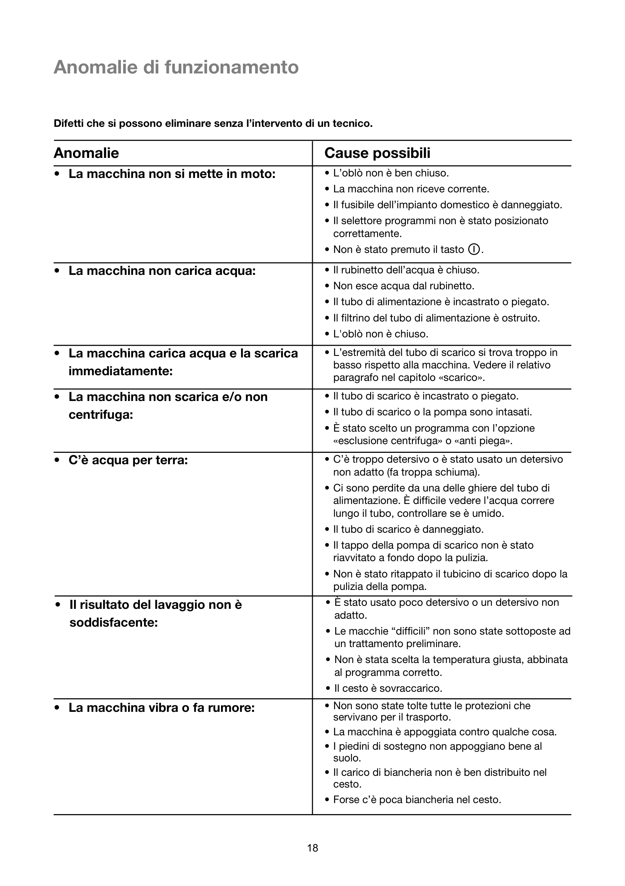
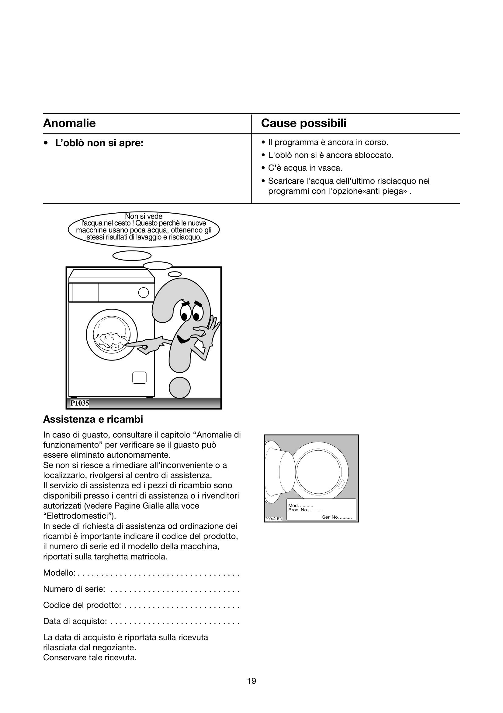
| Anomalia | Cause possibili |
|---|---|
| La macchina non si mette in moto |
|
| La macchina non carica acqua |
|
| La macchina carica acqua e la scarica immediatamente | L'estremità del tubo di scarico si trova troppo in basso rispetto alla macchina |
| La macchina non scarica e/o non centrifuga |
|
| La macchina vibra o fa rumore |
|
| C'è acqua per terra |
|
| Risultato del lavaggio non soddisfacente |
|
| L'oblò non si apre |
|
Assistenza e Ricambi
In caso di guasto, consultare il capitolo "Anomalie di funzionamento" per verificare se il guasto può essere eliminato autonomamente. Se non si riesce a rimediare, rivolgersi al centro di assistenza.
Il servizio di assistenza ed i pezzi di ricambio sono disponibili presso i centri di assistenza o i rivenditori autorizzati.
La data di acquisto è riportata sulla ricevuta rilasciata dal negoziante. Conservare tale ricevuta.
Ricambi Originali
Per il modello RL40 (PNC 914 241 008 01) — Lavatrice 5 kg. Ricambi e accessori originali disponibili presso shop.electrolux.it. Spedizione gratuita a partire da 30€.
| Categoria | Ricambio | Prezzo |
|---|---|---|
| Tubi flessibili | CLASSIC Tubo scarico 2,5m | €8,00 |
| CLASSIC Tubo scarico 1,5m | €6,40 | |
| Tubo carico Safety System 1,5m | €29,60 | |
| SAFETY SYSTEM Tubo carico 2,5m | €33,75 | |
| CLASSIC Tubo carico 3,5m | €8,00 | |
| Tubi carico | Tubo carico A/Fredda Dritto/Curvo 2,5m | €11,20 |
| Tubo carico A/Calda Dritto/Curvo 2,5m | €12,00 | |
| Tubo carico A/Calda Dritto/Curvo 1,5m | €10,40 | |
| CLASSIC Tubo carico 1,5m | €6,40 | |
| Filtri | Sigillo del filtro lavatrice | €10,40 |
| Filtri | Copri filtro pompa lavatrice | €5,95 |
| Motori e Pompe | Bullone ammortizzatore 14,3x72 | €4,64 |
| Accessori | CLEAN AND CARE - 3 IN 1 (12 pz) | €17,24 |
| Accessori | CLEAN AND CARE - 3 IN 1 (SACHET) | €9,75 |
| Accessori | SUPER CLEAN WM | €10,02 |
| Accessori | DW AND WM SALT | €1,50 |
| Accessori | SUPER CARE | €9,37 |
| Accessori | Penna Smacchiante Ultrasonic | €124,00 |
Dati Tecnici
Questa macchina è conforme alle direttive CEE: 73/23/CEE (bassa tensione) e 89/336/CEE (compatibilità elettromagnetica).
Esperienze degli Utenti
Questa sezione raccoglie consigli pratici emersi da forum, recensioni e test indipendenti, integrando il manuale ufficiale con indicazioni su dosaggio detersivo, programmi consigliati, manutenzione ordinaria e anticalcare fai-da-te.
Programmi Consigliati per Tipo di Capo
| Tipo di capo | Programma | Temperatura | Centrifuga | Note |
|---|---|---|---|---|
| Biancheria letto / asciugamani | Cotone | 60 °C | Max | Igienizzante; per sporco ostinato 90 °C |
| Bianchi (magliette, camicie) | Cotone / Colorati | 40 °C | Max | Detersivo con sbiancante ottico |
| Colorati misti | Colorati / Sintetici | 30–40 °C | 800–1000 giri | Detersivo specifico per colorati |
| Sintetici (poliestere, nylon) | Sintetici | 30 °C | 800 giri | Aggiungere ammorbidente; max 30 °C per evitare odori |
| Lana e cachemire | Lana / Delicati | Freddo–30 °C | Esclusa o 400 giri | Detersivo specifico lana; NO ammorbidente |
| Seta e pizzo | Delicati / Lavaggio a mano | Freddo–30 °C | Esclusa | Detersivo delicato; meglio in federa di cotone |
| Jeans | Colorati / Cotone | 40 °C | Max | Rovesciare i capi per proteggere il colore |
| Abbigliamento sportivo | Sintetici / Rapido | 30 °C | 600–800 giri | NO ammorbidente (ostruisce le fibre tecniche) |
| Capi poco sporchi (rinfresco) | Rapido (30 min) | 30 °C | Max | Dose ridotta di detersivo; max 3 kg |
Dosaggio Detersivo: Guida Pratica
Il dosaggio corretto dipende da durezza dell'acqua, carico e grado di sporco. Informatevi sulla durezza della vostra zona presso il gestore idrico locale (mappa della durezza disponibile online).
| Carico | Durezza acqua | Detersivo liquido | Detersivo in polvere |
|---|---|---|---|
| 4–5 kg (carico normale RL40A) | Dolce (< 15 °fH) | 35 ml | 50 g |
| Media (15–25 °fH) | 50 ml | 75 g | |
| Dura (> 25 °fH) | 65 ml | 100 g | |
| 2–3 kg (mezzo carico) | Dolce | 25 ml | 35 g |
| Media | 35 ml | 50 g | |
| Dura | 45 ml | 70 g |
- Sporco ostinato: aumentare del 20% — Capi poco sporchi: ridurre del 20%
- Polvere sempre nel cassetto (scomparto II) — si scioglie gradualmente
- Liquido meglio nella pallina dosatrice direttamente nel cestello (evita residui nel cassetto)
- Non fidatevi del tappo: ogni marca ha misure diverse — usate un misurino graduato
- Se la lavatrice fa troppa schiuma: dosate meno. Se i capi escono opachi o grigi: dosate di più.
Marche di Detersivo: Esperienze e Test
Secondo test indipendenti (Altroconsumo, recensioni utenti) e forum di settore, ecco le marche più apprezzate:
| Marca | Formato consigliato | Ideale per | Voto medio |
|---|---|---|---|
| Dixan | Liquido Lavanda / Power Caps Color | Bianchi, macchie grasse, profumazione intensa | 9.3/10 |
| Dash | Pods All-in-1 / Liquido Classico | Bucato quotidiano, anti-odore, rapporto q/prezzo | 9.0/10 |
| Ace | Liquido Igienizzante Classico | Igienizzazione, bianchi, capi delicati | 8.5/10 |
| Omino Bianco | Liquido Color+ / Igienizzante | Colorati, capi scuri/neri, rapporto q/prezzo | 8.3/10 |
| Chanteclair | Liquido Muschio Bianco | Profumazione delicata, formula concentrata | 8.2/10 |
| Winni's / Biolù | Liquido / Polvere ecologici | Basso impatto ambientale, pelli sensibili | 8.0/10 |
Anticalcare e Manutenzione Ordinaria
Il calcare si forma con acqua dura, alte temperature e detersivo in polvere. La migliore soluzione naturale è l'acido citrico: economico (3–6 €/kg), biodegradabile, non danneggia gomma e metalli.
| Prodotto | Dose | Frequenza | Modalità |
|---|---|---|---|
| Acido citrico (polvere) | 100–150 g | Ogni 30–45 giorni | Versare nel cestello vuoto, ciclo a 60–90 °C; ideale per acqua dura |
| Acido citrico (soluzione 20%) | 100 ml | Ad ogni lavaggio | Nel vano ammorbidente, come anticalcare e ammorbidente naturale |
| Aceto bianco | 200 ml | Sporadico (max 1 volta/mese) | Nel cestello, ciclo a 60 °C; attenzione: può indurire le guarnizioni a lungo termine |
| Bicarbonato di sodio | 1 cucchiaio | Ad ogni lavaggio | Nel cestello come addolcente; non disincrosta, aiuta a prevenire |
- MAI miscelare acido citrico con candeggina (produce cloro gassoso tossico)
- MAI miscelare acido citrico con bicarbonato (si neutralizzano a vicenda)
- MAI versare acido citrico e detersivo insieme nel cassetto: acido e base si annullano
- L'acido citrico non disinfetta e non sgrassia: per igienizzare usare percarbonato di sodio
- L'aceto usato regolarmente può danneggiare guarnizioni in gomma e parti in alluminio
Pulizia Periodica della Lavatrice
| Operazione | Frequenza | Come fare |
|---|---|---|
| Guarnizione oblò | Dopo ogni lavaggio | Asciugare con un panno; una volta al mese pulire le pieghe con aceto e bicarbonato |
| Cassetto detersivo | Ogni 15–30 giorni | Estrarre, lavare sotto acqua calda, spazzolare i residui nei vani |
| Filtro pompa di scarico | Ogni 2–3 mesi | Aprire lo sportellino, svuotare l'acqua nella bacinella, estrarre e pulire il filtro |
| Lavaggio sanitario a 90 °C | Ogni 1–2 mesi | Cesto vuoto, 100 g acido citrico, ciclo cotone a 90 °C |
| Tenere l'oblò aperto | Sempre | Dopo ogni lavaggio lasciare l'oblò socchiuso per evitare muffe e cattivi odori |
| Pulizia esterna | Quando necessario | Panno umido e detersivo neutro; NO solventi o abrasivi |
Errori Comuni da Evitare
- Usare sempre la stessa dose di detersivo — spreco di prodotto e residui sui capi
- Riempire il cestello oltre il limite — i panni non si lavano né sciacquano correttamente
- Mettere il liquido nel cassetto per abitudine — meglio la pallina dosatrice nel cestello
- Ignorare la durezza dell'acqua — dosaggio sbagliato, bucato opaco o macchiato
- Non pulire il filtro regolarmente — causa odori, acqua stagnante e potenziali guasti alla pompa
- Chiudere l'oblò subito dopo il lavaggio — favorisce muffa e cattivi odori; lasciare sempre socchiuso
- Usare anticalcare chimico ad ogni lavaggio — non necessario se l'acqua non è molto dura